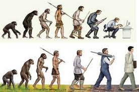

Java课程系列-序章
正式开启Java的系统学习前，我们需要了解一些概念上的东西。比如我们翻译时经常遇到的所谓“类”，“方法”这些，该怎样去理解它们呢？
类
首先是“类”。
我们常常说“人类”。那什么是人类呢？人有一个头，有四肢，有五脏六腑，所以就被称作“人类”吗？
显然，决定我们是“人类”而非“狗类”或“猫类”的，是我们作为“人类”所独有的行为与特征。
你与我，既不同名，也不长得一样，但我与你皆为人类。我们是“人类”这一个类别下的一个个独有的个体，也就是对象。
万事万物皆对象，一个对象，必然有它所属的类（只讨论Java范围）。
属性和方法
作为人类的我们，作为人类个体对象的我们，都有两只眼睛，一张嘴，还有两只耳朵，这是看得见摸得着的， 看不见的，身高，体重，年龄等，这些就是人类的属性。
除了属性外，最起码都具备吃，喝，睡这些行为吧。吃饭，喝水，睡觉，思考，言语，这些是我们生来就有的，作为“人”这一类的能力， 即我们的方法。


示例一：人-类
类就好比一个模板，一份蓝图，它刻画了由它所产生的对象所具备的属性和方法。
现在，请尝试阅读一份简陋的人类模板：

类的实例化-new方式
有了模板后，我们就可以造一个实在的人出来。
（注：实在指数据在内存中真实存在。）
通常，我们使用new的方式来对类进行实例化，实例化后得到一个对象。代码格式为：
类名 自定义对象名 = new 类名();
如下我们便得到了一个名为skipper的人类对象。

（注：Person()看似像个方法，实则是类的构造器，构造器是类能够生成对象的原因。构造器如无特殊要求默认省略，但不代表不存在。）
现在，我们有了这个叫skipper的对象，依照上面的类模板，skipper拥有姓名（name）、年龄（age）、身高（height）、
体重（weight）、
体温（temperature）、国籍（country）、所操语言（language）、性别（isMale）等属性，并具备吃饭（eat()）、睡觉（sleep()）、
说话（speak()）等行为能力，即方法。但是请注意，skipper的属性还都没有赋值，我们可以按需给skipper赋值让他变得更加具象化。
比如，我们可以赐予skipper一个姓名，属性name的前面有个词-String，它表示了name属性的类型，
即字符串类型。
通过object.attribute = value;的方式，我们可以对对象的属性，按照模板规定的数值类型进行赋值：

如图所示，skipper已被我赐予了Skipper的名字。其他属性就不一一赋值了，因为本篇除了name属性其他属性并不需要用到。
接着我们试试来调用一下skipper看看会发生什么吧。
我们来调用一下skipper的几个方法：

通过object.method(parameter);的方式，我们可以调用一个对象所具有的方法。
通过模板可以看出，这三个方法都是在控制台打印结果的，其中speak()方法中需要传入一个String类型，名为words的参数。
我们来运行一下程序看看：

Skipper成功做到了吃饭、睡觉、说一句简单的话。 此刻你的感受是什么样的呢，是觉得神奇，还是觉得：这不就是显示出几句文字嘛，我直接打字出来不比这快多了？
诚然，这只是在控制台上打印几句无聊的文字，但或许，我们可以放开一下想象力，倘使Skipper被存在一个遥控器里， 我们按下遥控器就可以调用它的一个方法，比如，叫做hotWater()，这个方法体里不再是简单控制台打印文字， 而是远程连接家里的网络，进而连接到家里能够联网的淋浴设备。
下班后，你拿出遥控器，调用Skipper的hotWater方法，家里的热水器便开始启动加热。待你回到家后，热水刚刚烧好......
回调
假使现在有一个这样的场景：
冬天，天气很冷，我（temperature=30）与张三（temperature=31）一同待在一个房间内， 此时我发现屋子的窗户没关，难怪这么冷！窗户一定要关上。我和张三都具有关窗户的能力（方法），因为我比张三更冷，很不想动弹， 于是我便叫（调用）张三去关窗户（假设关窗的方法为closeWinodw()），并要他告诉我关窗户的结果。 张三起身去关窗户，这时可能会有这样两种结果：
结果一：张三关上了窗户，我的temperature的值上升到了32， 张三还到我面前跟我说：“窗户关上了。”（成功回调）。
结果二：张三没能关上窗户， 因为窗户是坏的，我的temperature依然是30，张三到我面前说了原因。（失败回调）。

回调并不是必须的，只是我让张三去关窗户的时候，也对他发出了告知我结果的命令。 在这样的场景中，我与张三都是对象，作为一个对象的我，call了张三做什么事情，这种说法其实并不是很规范，因为通常能call的， 是开发者。但作为独立个体的我，实际上能不能让张三去实现他所具有的方法呢？这是可以的， 只不过我让张三去做某事的这件事本身，就是我自己所有的一个方法，有一个更高级别的人， 或许是开发者，他对我发出了命令（调用），让我去叫张三去关窗户。这种模式就叫做代理模式。 正如歌手都会有自己的经纪人，歌手负责唱歌，歌手也可以唱完歌收钱，但为了各司其职，收钱通常是让经纪人负责。
代理模式
我们来展开说一下代理这回事。
现在有一个类，叫做歌手类（Singer），歌手类继承了人类，人类所有的属性和方法，歌手类的对象也都继承到了，
所以歌手必然是一个人。 我们使用new的方式，新建一个歌手类的对象，并给对象起名为“大明星”。有另一个类，
叫做经纪人类（Agent），同样，该类也继承了人类，因此经纪人必定也是一个人。我们使用new的方式，
新建了一个经纪人，暂且就叫做“李四”吧。
为什么要强调他们必定是一个人呢？因为人类里定义了一个方法：收钱。 大明星和李四都能收钱，但大明星作为歌手，他的主要职能是唱歌，收钱这种小事，还是让李四去做吧。 我们来看看大明星和李四各自都是什么样的结构。
首先是经纪人的模板：

没错，乍一看基本什么都没有。但，真的是什么都没有吗？
关键字extends
extends字面意思是“扩展”，中文习惯说“继承”，在这里，Agent这个类继承了Person这个类
（Person类模板见上方人类模板）。
通过继承的方式，Person类里定义的属性和方法全部给到了Agent类，由此，就没必要再把人类里定义的属性和方法再放到经纪人类里写一遍了。
接着是歌手的模板：

同样可以看到，Singer类也继承了Person类，于是不必要的定义省去了。但是又可以看到，Singer类多了一个属性， 这个属性叫agent。 还有既然继承了，为什么Singer类的sing()方法还要再写一遍呢，不过看方法体内的代码与Person类中定义的sing()并不同。 （方法的重写。这里体现了extends的“扩展”层面的意思。）
再看agent，它的类型是Agent，这个Agent是我们定义的那个经纪人类吗？难道类也可以作为属性？
答：是的，这里的Agent就是指Agent类，一个类可以作为另一个类的属性出现。
我们把Agent绑定给Singer，就好比每个大明星都有自己的经纪人一样，经纪人就是明星的一个属性。
我们来看看代码是怎么处理的吧：

控制台结果如下：

由于我们在Singer类中重写了继承于Person类的sing()方法，即在方法体中又调用了一次Agent类中的收钱方法， 当我们调用唱歌方法时，结果并不只是大明星完成唱歌， 还顺带让另一个对象经纪人去收了钱。 这，就叫代理模式。
就算Person类中如果没有getMoney()方法，即我们剥夺了大明星收钱的能力， 但只要Agent类中定义了getMoney()方法， 那即便大明星连买菜都不会，也不会唱完歌赚不到钱了。
结尾
Java开发里的模式还有很多，但仅从这个代理模式就可以看出，Java程序的开发逻辑，是非常贴近于现实中的逻辑的。原因就在于Java是一门面向对象的编程语言。在Java中，所有功能的完成基本都是由一个个对象来实现的。我们要前往月球，那就造一艘宇宙飞船的对象，飞船需要燃料， 我们就造燃料的对象......
本篇课程只是简单地带大家体会一下Java的开发大致是怎么一回事。实际真正开发中，需要调用的操作有很多，逻辑也比较严密和复杂，但那并不是作为翻译的我们需要关心的事。